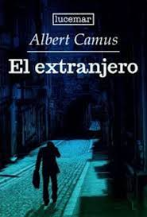
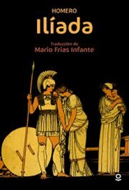
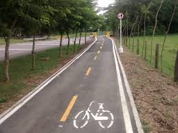
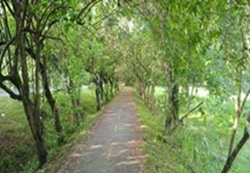

LEER LIBROS
Me apasiona sumergirme en el mundo de la literatura, perderme entre las páginas de un buen libro y dejarme llevar por las historias que cobran vida ante mis ojos. Disfruto de la sensación de abrir un libro y adentrarme en universos completamente nuevos, explorando lugares lejanos y tiempos pasados o futuros. Para mí, la lectura es más que un simple pasatiempo; es una forma de enriquecer mi mente, expandir mi imaginación y comprender mejor el mundo que me rodea. Cada libro que leo me brinda la oportunidad de aprender algo nuevo, ya sea sobre diferentes culturas, períodos históricos, o simplemente sobre la condición humana. Me encanta explorar una amplia variedad de géneros literarios, desde la ficción hasta la no ficción, la poesía, la ciencia ficción y mucho más. La lectura no solo me entretiene, sino que también me inspira, me desafía y me ayuda a crecer como persona. En resumen, podría decir que los libros son mi pasión, mi refugio y mi compañero constante en esta maravillosa aventura llamada vida. algunos de mis libros favoritos:


SALIR A MONTAR BICICLETA
Una de las actividades que más disfruto y que me llena de vitalidad es salir a montar en bicicleta. Para mí, la experiencia de recorrer caminos y senderos sobre dos ruedas es incomparable. Cada vez que me subo a mi bicicleta, siento una conexión especial con la naturaleza y con mi propio cuerpo. El viento acariciando mi rostro, el sonido rítmico de los pedales girando, y la sensación de libertad que experimento al explorar nuevos lugares son incomparables.


ESCUCHAR AUDIO NOVELAS
Una de las actividades que realmente me apasiona y que forma parte esencial de mi vida diaria es sumergirme en el fascinante mundo de las audionovelas. Para mí, escuchar audionovelas no es simplemente un pasatiempo, es una experiencia envolvente que despierta mi imaginación y me transporta a mundos imaginarios llenos de emociones, intrigas y personajes inolvidables.
Cada vez que pongo play en una audionovela, me sumerjo en una aventura auditiva que me permite desconectar del mundo exterior y sumergirme en una narrativa cautivadora. La combinación de la actuación de voz, los efectos de sonido y la música envolvente crea una atmósfera única que me atrapa desde el primer momento y me hace sentir como si estuviera viviendo la historia en tiempo real.